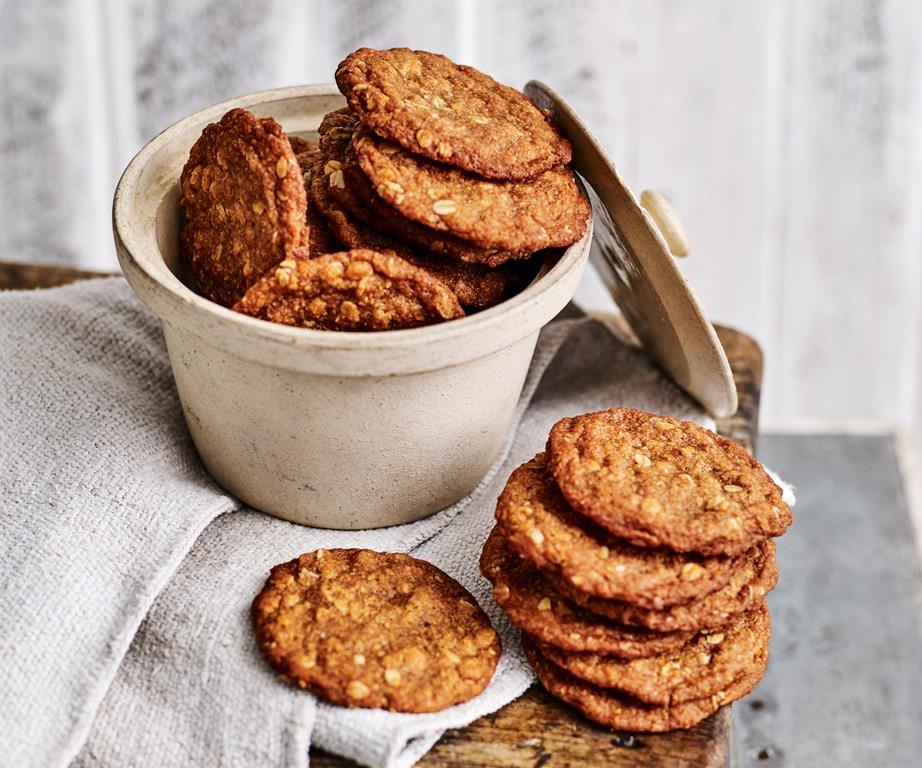

The best Anzac biscuit recipe of all time

You can enjoy this Anzac biscuits recipe on Anzac day, or any day of the year really.
Ingredients:
- 125 grams (4oz) butter, chopped
- 2 tablespoons golden syrup or treacle (see tips)
- 1/2 teaspoon bicarbonate of soda (baking soda)
- 2 tablespoons boiling water
- 1 cup (90g) rolled oats (see tips)
- 1 cup (150g) plain (all-purpose) flour
- 1 cup (220g) firmly packed brown sugar
- 3/4 cup (60g) desiccated coconut
- Preheat oven to 180°C/350°F. Grease two large oven trays; line with baking paper.
- Stir butter and syrup in a medium saucepan over low heat until smooth. Stir in combined soda and the water, then remaining ingredients.
- Roll level tablespoons of mixture into balls; place 5cm (2in) apart on lined trays, then flatten slightly.
- Bake for 12 minutes or until golden. Cool biscuits on trays.
Back